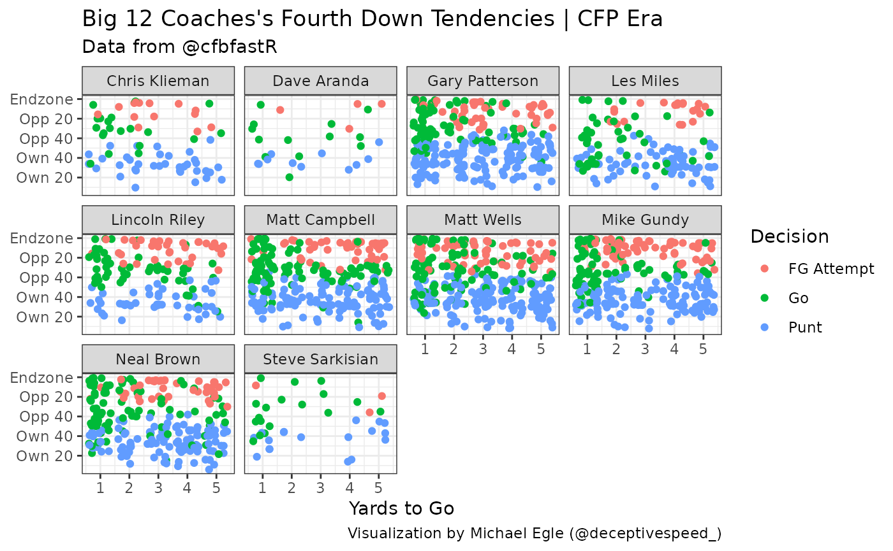

Creating Fourth Down Tendency Plots Using cfbfastR
Michael Egle


9/5/2020
fourth-down-plot-tutorial.RmdHey everyone, my name is Michael and over the summer I worked on a daily series of plots using ggplot and the cfbfastR package. One of my favorite plots I put together was the fourth down tendency plot for various head coaches. This visualization was inspired by Michael Lopez doing the same thing for NFL coaches. This tutorial is going to walk through how they’re put together. If you haven’t already, you should read the introduction tutorial that Parker made to get used to the data and download the package.
First, we’ll have to install and import the necessary packages
if (!requireNamespace('pacman', quietly = TRUE)){
install.packages('pacman')
}
pacman::p_load(tidyverse)
pacman::p_load_current_gh("saiemgilani/cfbfastR")We are going to load in data for seasons 2014-2020, it’ll take between 45-90 seconds to run.
tictoc::tic()
pbp <- data.frame()
seasons <- 2014:2020
progressr::with_progress({
future::plan("multisession")
pbp <- cfbfastR::load_cfb_pbp(seasons)
})
tictoc::toc()## 56.108 sec elapsedNext, we’ll need to get the coaching information, so we’ll use the cfbd_coaches function:
coaches <- purrr::map_dfr(seasons,function(x){cfbfastR::cfbd_coaches(year = x)})In order to get the school’s conference information, we’ll use the cfbd_team_info function and use dplyr’s left_join function, joining on the school column in both tables:
team_info <- cfbfastR::cfbd_team_info()
coaches <- coaches %>%
dplyr::left_join(team_info, by="school")
coaches <- coaches %>%
dplyr::mutate(coach = paste(first_name, last_name, sep = " ")) %>%
dplyr::filter(games >= 6) %>%
dplyr::select(coach, school, year, conference)Since interim coaches are included in the coaches dataframe, we’ll set the cutoff at coaching 6 or more games.
We only have a couple more steps to make our graph. Next, we need to add our coaches to the pbp dataframe using join functions
pbp <- pbp %>%
dplyr::inner_join(coaches, by = c("offense_play" = "school", "year" = "year"))Now we can filter down to only fourth down plays, then we’ll add columns to determine if the play was a punt, FGA, or the team went for it.
down4 <- pbp %>%
dplyr::filter(down == 4) %>%
dplyr::mutate(fga = ifelse(str_detect(play_type, "Field Goal"),
1, 0),
punt = ifelse(play_type == "Punt", 1, 0),
attempt = ifelse(rush == 1 | pass == 1, 1, 0),
play = dplyr::case_when(fga == 1 ~ "FG Attempt",
punt == 1 ~ "Punt",
attempt == 1 ~ "Go"))And now we’ve got all the info we need to make the graph! The code below is listed for current Big 12 head coaches, but you can alter it to show whichever coaches you want.
down4 %>%
dplyr::filter(!is.na(play)) %>%
dplyr::filter(coach %in% c("Matt Campbell", "Steve Sarkisian", "Lincoln Riley", "Chris Klieman", "Matt Wells",
"Neal Brown", "Les Miles", "Mike Gundy", "Gary Patterson", "Dave Aranda")) %>%
dplyr::filter(distance <= 5, distance > 0) %>%
ggplot(aes(x = distance, y = 100 - yards_to_goal, color = play)) +
geom_jitter() +
facet_wrap(. ~ coach) +
theme_bw() +
labs(x = "Yards to Go",
title = "Big 12 Coaches's Fourth Down Tendencies | CFP Era",
subtitle = "Data from @cfbfastR",
caption = "Visualization by Michael Egle (@deceptivespeed_)",
color = "Decision") +
scale_y_continuous(labels = c("Own 20", "Own 40", "Opp 40",
"Opp 20", "Endzone"),
breaks = c(20, 40, 60, 80, 100)) +
theme(axis.title.y = element_blank())
Looks good! Small sample size but can easily be built upon. Hopefully you found this tutorial helpful and can make some more cool CFB related visualizations with ggplot2